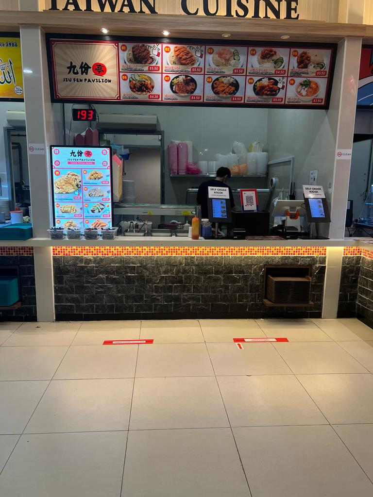
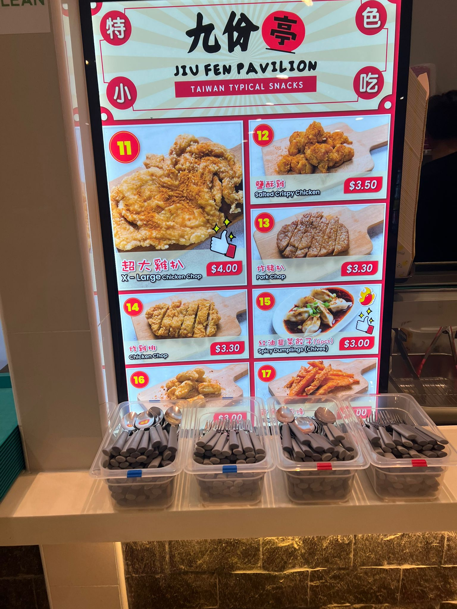

About Us
Our goal is to serve authentic Taiwanese dishes made with the finest
ingredients to everyone! We take pride in using traditional
receipes while infusing a modern twist that caters to the paletes of our customers.

Our History
Founded in 2011, Jiu Fen Pavilion was born out of love for taiwanese
cuisine. The founder wants to bring the authentic flavours of taiwan to
customers in NYP!

Contact Us
Contact us at 6123 4567 or visit us at our stall located at
180 Ang Mo Kio Ave 8, Block P1, Basement Nanyang Polytechnic, Singapore 569830